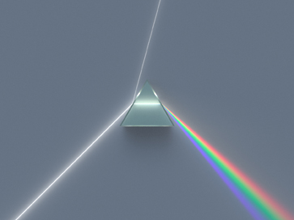

Final Project
Proposal:
Leveraging several aspects of the course curriculum, I aim to create a responsive light structure driven by acousto-optic effects.
This work is a reaction to the visceral works of a New York City ensemble Hess Is More. Earning critical acclaim as “[the 2014] album-of-the-year candidate” by The Lowbrow Reader, the octet creates experimental dance music rooted in jazz, krautrock, and afrobeat.
While the apparatus is designed to accompany a live performance by the band, it will be versatile enough to function as a stand-alone installation. Its primary components will be comprised of multifaceted pieces of glass (figure 1), a microphone, a light source, as well as reflective and transmissive gratings. Its output will be a series of prismatic images (figure 2) with the exact aesthetics to be determined in the later stages of the project. I expect the resulting image to be evocative of the band’s emblem – a constellation-like pattern encased in a circle (figure 3). Simultaneously translating the environment and reacting to it, light will thus pair with sound.
- 
figure 1

figure 2

figure 3
Material
After experiementing with glass, I found that in order to fulfill my wish for prismatic images I would have to commission a custom piece, which would be cost prohibitive, amongst other things. Dan Oran, a classmate of mine recommended polycarbonate which has fantastic optic properties. When material is manipulated with heat it fractures internally and refracts, to elaborate on this effect I lined the bottom of my structure with reflective film.
To house the wiring, I made the base our of sheet metal steel. The process was much smoother than my first attempt at working with the medium.
Electronics
Initially I thought I would rotate the light fixture by having a solenoid (or a series of). After making the solenoid, I realized that the designed I originally envisioned took on too many variables. So instead I adapted Neil's LED array to spead along a wider distance. Having had established a serial connection in the weeks prior I was able to program the array to communicate with my microphone board with relative ease.
Conclusive Thoughts
I am slightly disappointed with the outcome of my project, there is something about the aesthetics that's amiss and it is not as eloquent from a technological standpoint. This is a good lesson to take on projects that are more manageable in scope and fulfill a single criteria rather than many, i.e. either making light modulation piece with a sophisticated technical underpinning or an art object – trying to do everything at once results in mediocracy.